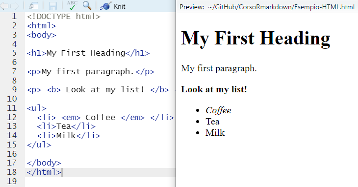
R-Project
1 Introduction
1.1 Quarto
R Markdown, next generation
All based on knitr to execute R code
Analyze. Share. Reproduce. You have a story to tell with data—tell it with Quarto.
This course presents the integration between RStudio and quarto. All the code in the executable code chunks are hence based in R:
Download R: https://cran.r-project.org/bin/windows/base/
Download RStudio: https://posit.co/download/rstudio-desktop/
RMarkdown is the integrated markup language integrated within RStudio is the “predecessor” of quarto.
Markup languages such as quarto, markdown, html, latex, are programming languages where formatting is handled by chunk codes, named tags.
| Format | Extension |
|---|---|
| Markdown | .md |
| R Markdown | .Rmd |
| Quarto | .qmd |
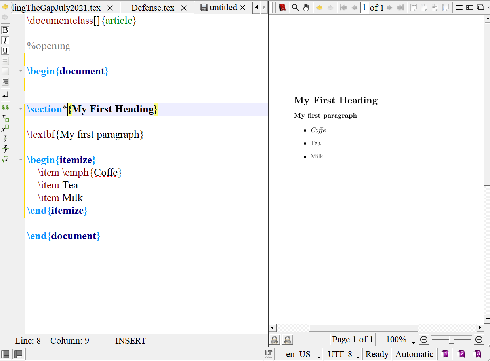
1.2 Markup langues vs. WYSIWYG languages
What You See Is What You Get
The text is modified with built-in command, you can see immediately the changes:
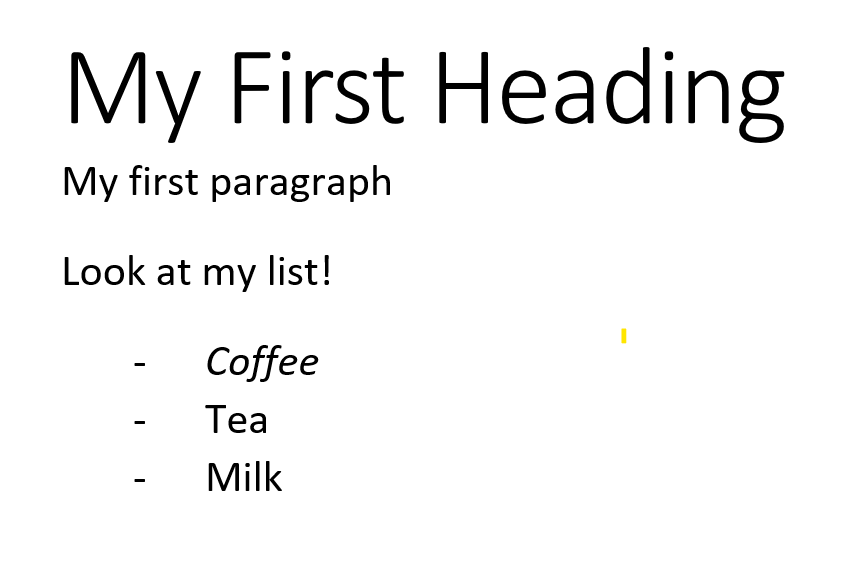
1.3 Little effort, great consequences
Using knitr, it allows for integrating analyses, text, and graphs in a single document:
Replicability
Tydiness
Convenience
Create dynamic content with Python, R, Julia, and Observable
2 R project
R projects create a sort of mini-universe on you PC/Macbook so that you do not have to worry about working directories – just the folder of the project and the subfolders composing the project:
my-project/
│
├── index.qmd
├── data/
│ └── mydata.csv
├── img/
│ ├── logo.png
│ ├── plot.jpg
│ └── illustration.svg
├── bibliography/
│ └── references.bib
└── slides/
├── intro.qmd
└── advanced-topics.qmd2.1 Create an R Project
From File \(\rightarrow\) New Project:
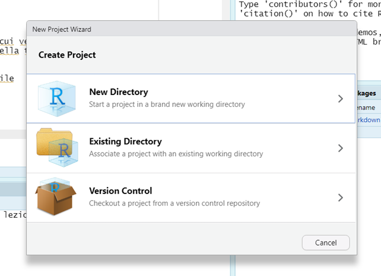
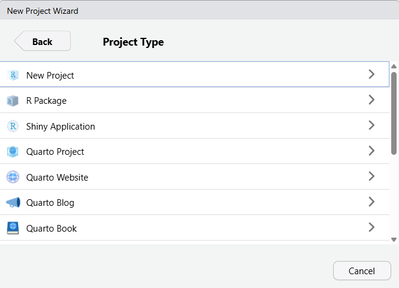
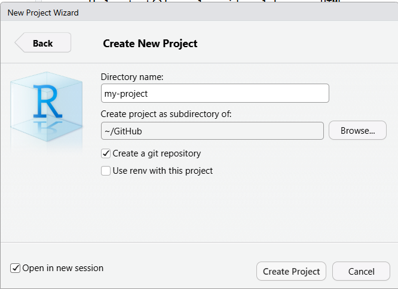
First (Figure 1 (a)), declare whether a new folder should be created (New directory) or not (Existing Directory). Then (Figure 1 (b)), the type of project must be selected – for the time being, please stick with the basic project New Project. Finally (Figure 1 (c)), give a name to your project and make sure to tick the Open in new session option.
Don’t worry
The project is completely empty – there are no subfolders nor files
The working directory has been automatically set to be within the R project:
getwd()[1] "C:/Users/Ottavia/Documents/GitHub/shine-with-quarto"If you run the dir() function from your console (within the project), the resulting string would be empty.
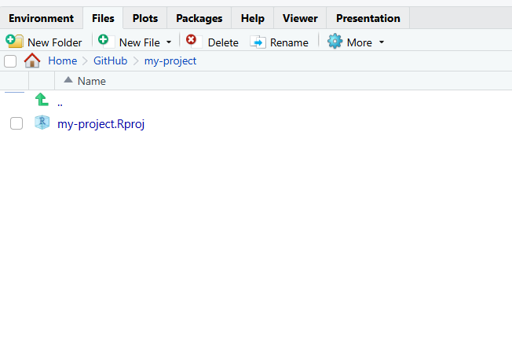
2.2 Populate the project
Create the sub-folders by using the New folder button
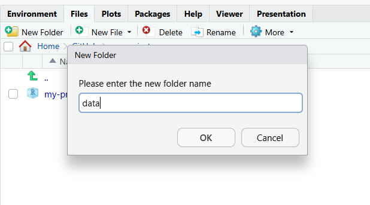
The location of the project folder on your computer can be easily found by using the More button and selecting the Show folder in New Window option:
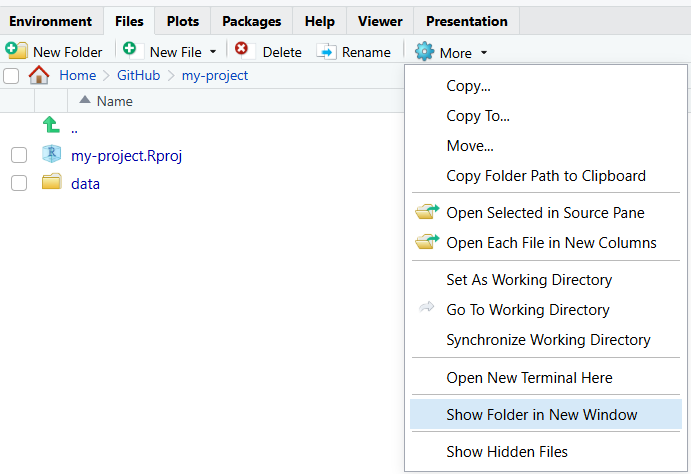
2.2.1 Create the very first quarto document
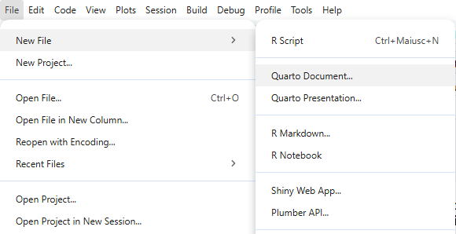
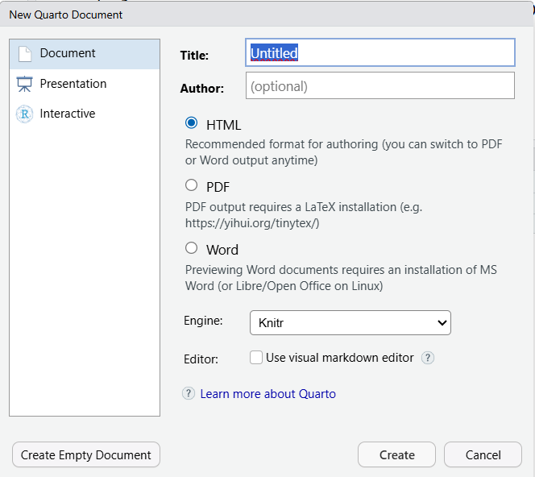
Figure 3 (a) initializes the creation of a new quarto document, while in Figure 3 (b) format of the document, as well as some of the elements that will populate the YAML (e.g., author and title) are defined. The default characteristics are the html document. Make sure to remove the tick from the Use visual markdown editor option.
2.2.1.1 Compile quarto document
The source file can be compiled and rendered in the desired format:
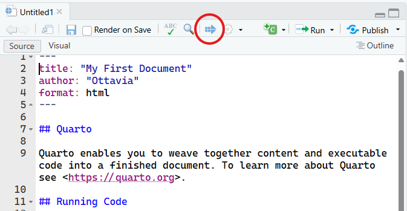
The file can be compiled also using the key combination
ctrl + shift + k Leaving the default, the document will be compiled in HTML. Make sure to save the file as index (it will become clear later on)